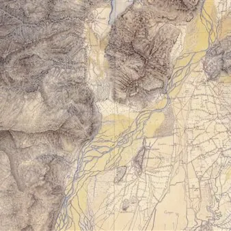

da sab 17 ott a sab 31 ott · dalle 17:30
Conferenze nell'ambito del "Contratto di fiume del Ledra"
Contratto di fiume Due incontri pubblici su territori, acque e comunità vedranno protagonista Angelo Floramo nella sede dell’Ecomuseo, il LAB Terremoto in piazza Municipio 5 a Gemona. sabato 17 ottobre alle 17.30 “Friuli terra di Acque. Miti e riti, culti e percorsi tra…
 Indicazioni
Indicazioni
- Costi e prenotazioni
- Costo non indicato · Prenotazione non indicata
- Programma
- Programma da verificare. Apri la fonte ufficiale per orari e possibili aggiornamenti.
- In caso di maltempo
- Nessuna indicazione specifica pubblicata.
- Note
- Acquisito automaticamente dalla fonte.
L’EVENTO
Descrizione completa
Contratto di fiume
Due incontri pubblici su territori, acque e comunità vedranno protagonista Angelo Floramo nella sede dell’Ecomuseo, il LAB Terremoto in piazza Municipio 5 a Gemona.
sabato 17 ottobre alle 17.30
“Friuli terra di Acque. Miti e riti, culti e percorsi tra Protostoria e Medioevo”
sabato 31 ottobre alle 17.30
”Carte d’Acqua” custodite nella Biblioteca Guarneriana Antica di San Daniele
Angelo Floramo è scrittore, docente e consulente scientifico per la sezione antica della Biblioteca Guarneriana. Dopo la laurea in storia si è specializzato in filologia latina medievale, una disciplina che gli ha permesso di esplorare direttamente le fonti antiche, immergendosi nei testi originali del Medioevo e coltivando una visione profonda e critica della trasmissione del sapere nel tempo.
Le due conferenze sono inserite nel processo partecipativo del Contratto di Fiume del Ledra nell'ambito del progetto "Il fiume condiviso" sostenuto dalla Regione Friuli Venezia Giulia
Per approfondire https://share.sender.net/campaigns/ibOV/doppio-floramo
Immagine tratta dalla Kriegskarte (1798-1805), dettaglio sul Gemonese
Info e contatti
info@ecomuseodelleacque.it | 338 718 7227
IL PROGRAMMA
Programma e orari
Appuntamenti raccolti dalle fonti elencate. Dove manca un orario, non è ancora disponibile in questa scheda.
Programma pubblicato
- Dal 2026-10-17 al 2026-10-31
INFORMAZIONI UTILI
Prima di partire
- Controllare la fonte prima di partire.
ORGANIZZAZIONE